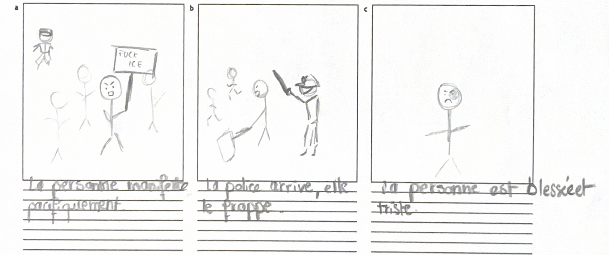
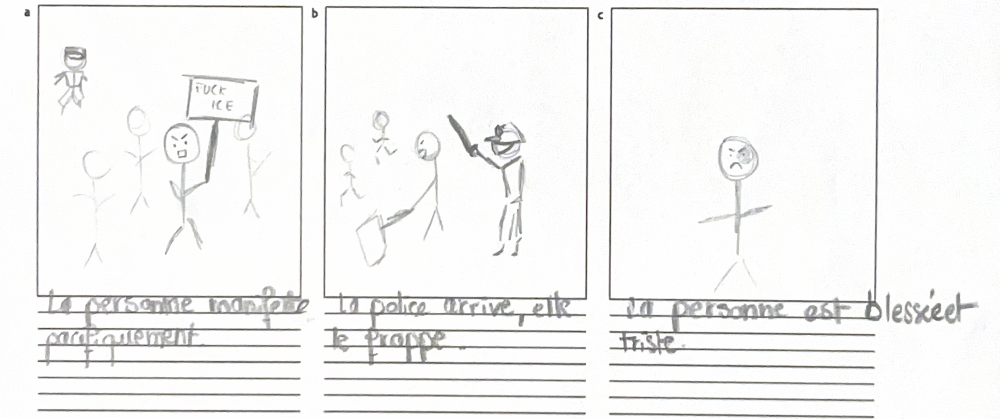

Blog Projet IHM 2026
Participants du groupe
- Caroline Zouloumian
- Noriane Labiad
- Mariana Duarte Ferreira
- Lyna Hocine
Les interviews
Nos personas
- Persona 1: Philippe, professeur de musique, 45 ans, et père de 2 filles. Il va souvent en manifestation avec d'autres professeurs. N'a pas de réseaux sociaux, apprends la date des manifs par le bouche à oreille (généralement dans la salle des professeurs).
- Persona 2: Camille, travaille dans un coffee shop, 28 ans. Elle va occasionellement en manif, à raison d'environ 5 par an. Elle va dans des manifs plutôt grandes et établies.
- Persona extrême: Lola, étudiante, 22ans. Elle organise des manifestations et va à au moins une manifestation par semaine. Elle a eu plusieurs fois des problèmes avec la police.
Points d'intéraction


 

Use scenario
Lieu : Paris (République) à 14h
Date : 1er mai
Contexte : Manifestation nationale pour les droits des travailleurs
Avant la manifestation
Philippe : A appris l'existence de la manifestation 2 jours plus tôt en discutant avec un collègue lors de la pause déjeuner. Son collègue lui a indiqué la date et l'heure mais pas plus. Avant de partir, il consulte Google Maps pour vérifier comment se rendre à République, mais il ne sait pas si certaines stations seront fermées.
Camille : Sort de son travail. Elle a vu l'information de la manifestation sur les réseaux sociaux.
Pendant la manifestation
Camille : En arrivant, elle cherche des amies qu'elle doit rejoindre. Ils lui ont dit qu'ils sont près de la statue, mais la place est bondée. Elle essaie de les repérer en suivant leur localisation sur son téléphone, mais la densité de la foule rend la mission difficile.
Philippe : Des tensions apparaissent près d'un carrefour. Le cortège ralentit fortement. Il ne comprend pas ce qui se passe à l'avant. Il remarque un groupe de policiers en tenue anti-émeute bloquant la rue. Autour de lui, les manifestants ralentissent, certains reculent. Il ne sait pas si la situation est tendue et hésite à continuer d'avancer.
Camille : Se sent un peu stressée par l'ambiance. Elle essaie de trouver la station de métro la plus proche encore ouverte, mais l'itinéraire proposé passe par une rue inaccessible.
Lola : Reçoit des informations contradictoires : certains disent qu'une sortie est sécurisée ; d'autres indiquent qu'elle est à éviter. Elle essaie d'appeler et d'envoyer des messages pour en savoir plus mais a du mal à avoir une vision globale fiable de la situation.
Une personne fait un malaise dans la foule. Les gens cherchent de l'aide à voix haute. Lola tente de contacter quelqu'un de son équipe, mais le bruit et la densité rendent la communication difficile.
Pendant plusieurs minutes, la situation est gérée de manière improvisée par les manifestants eux-mêmes.
Session Brainstorming
Problème 1 : Manque de Sécurité / Violence